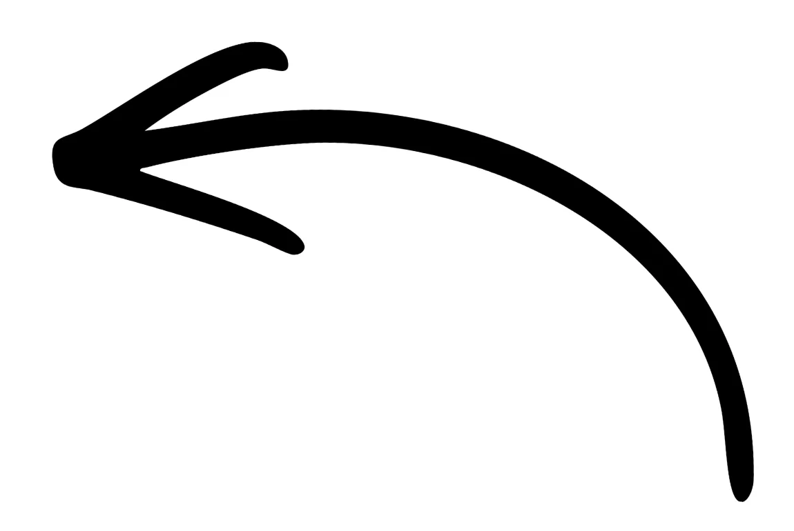

J'AIDE LES TRADERS À OBTENIR LEUR PREMIER PAYOUT…
et leur Dixième
C'est aussi simple que ça. La même méthode qui a permis à des dizaines de traders d'obtenir leur payout. Sans artifices. Juste du concret.
IMAGE
IMAGE
IMAGE
IMAGE
IMAGE
IMAGE

Quelques-uns parmi de nombreux payouts d'élèves.
(Vous verrez bien plus de preuves plus bas sur la page)
Alors, tu veux être payé pour trader, hein ?
Tu as regardé des dizaines de vidéos (probablement certaines des miennes), peut-être suivi des formations. Tu as même peut-être réussi un challenge de funding une ou deux fois.
Mais d'une façon ou d'une autre, ça n'a jamais duré. Les profits — s'ils sont arrivés — n'ont pas continué.
Tu sais que tu n'es pas stupide.
Tu as mis les heures qu'il faut.
Tu sais lire un graphique.
Alors pourquoi tu n'arrives pas à y arriver ?
Et comment diable tu brises ce cycle de :
"Apprendre apprendre apprendre → Gagner un peu → Perdre Encore Plus"
Je peux te dire, fort de mes 10 ans d'expérience et 5 ans à former d'autres traders…
Le problème, ce n'est pas toi.
Il n'y a pas de gène manquant. Pas de "certaines personnes ont juste le don" — j'ai formé suffisamment de traders pour te promettre que c'est un mythe.
Ce qui te maintient dans le cycle, ce n'est pas ce que tu sais.
C'est comment tu trades ce que tu sais.
IMAGE
Je suis Jawad – ce gars que tu regardes sur YouTube ou que tu lis dans ta boîte mail !
Et je ne parle pas de mentalité.
Je parle des choses mécaniques :
• Combien tu risques quand tu es confiant vs quand tu as peur.
• Si tu prends vraiment le setup à 14h que tu t'étais promis de prendre à 9h.
• Ce que tu fais après deux pertes de suite — suivre le plan, ou "ajuster".
C'est ça qui décide si tu es payé. Et voilà le problème —
Tu ne peux pas l'apprendre avec des vidéos. Personne ne peut.
Les vidéos peuvent t'apprendre quoi faire — je donne ça gratuitement toute la journée.
Mais les vidéos ne peuvent pas te regarder trader.
La seule façon de corriger comment tu trades, c'est :
Tu trades en réel. Puis quelqu'un qui a vu chaque version de ton erreur regarde tes trades, tes questions, tes points de blocage — et te dit directement ce qui ne va pas vraiment.
Pas des leçons génériques. Des réponses. Sur ton trading. Sur ta façon de trader.
C'est la partie que personne qui te vend des stratégies ne t'a jamais proposée. Pas parce que ça ne marche pas — parce que c'est difficile à délivrer. Tu ne peux pas le mettre dans un PDF.
ALORS VOICI COMMENT ON Y ARRIVE…
Je ne vais pas te mentir en te promettant que tu seras riche en une semaine. Le trading est difficile, et même avec le bon système et les bons conseils, tu vas devoir bosser.
Mais si tu comprends déjà ça et que tu es prêt à t'y mettre —
Jusqu'à maintenant, le seul vrai moyen d'avoir quelqu'un qui regarde tes trades était de payer un coach privé. Et les bons coaches facturent dans les 10 000 €.
La plupart des traders ne peuvent pas se le permettre.
Alors j'ai construit la meilleure alternative (sans le prix qui vide ton compte).
Le résultat ? Les élèves reçoivent des notifications comme celle-ci :
R
Revolut maintenant
Vous venez de recevoir 3 158,60 € de Ftmo Trading Global S.r.o. 💸
Et des relevés comme celui-là :
✓ Transaction entrante ✕
FL
+ $8 112,00
USD reçu de FTP London Ltd
Statut
✓ Reçu
Rien de tout ça ne vient d'une stratégie magique.
La façon dont ces traders sont arrivés aux payouts n'est pas passée par la maîtrise d'un modèle d'entrée "super secret" ou par des taux de réussite à 90%.
Ces gains (et tous ceux que tu vas voir) sont le résultat d'un processus spécifique :
Apprendre un système cohérent
↓
Le trader en temps réel
↓
Atteindre un blocage (tu le feras)
↓
Obtenir un regard sur tes trades — et des réponses, vite
↓
Le corriger. Recommencer.
↺
OUI tu as besoin d'une bonne stratégie (et j'ai ça aussi).
Mais le vrai progrès vient du feedback.
Tu vas rencontrer des obstacles en chemin — je suis sûr que tu en as déjà rencontré beaucoup — et ce qui détermine si tu t'effondres, ou si tu sautes par-dessus et continues...
C'est si tu obtiens les réponses dont tu as besoin au moment où tu en as besoin.
Et c'est ce que j'ai construit :
ÇA S'APPELLE L'ACCOMPAGNEMENT OTE 705
et il a amené des gens à des résultats encore et encore.
J'enseigne depuis 5 ans maintenant et j'ai formé des milliers de traders.
Grâce à ça, j'ai appris les meilleures — et les moins bonnes — façons d'amener les gens à des résultats.
OTE 705 est tout ce que j'ai appris sur la façon de faire payer les traders, condensé dans un seul système.
Voici comment ça marche, étape par étape.
ÉTAPE 1 - LA FORMATION
"Attends... Tu n'as pas dit que les vidéos ne me rendraient pas rentable ?"
OUI — pour 99% des gens, regarder des vidéos ne suffit pas.
Mais tu as quand même besoin d'un système (et d'un bon). C'est à ça que sert la formation.
Jour 1 – Mentalité & Fondations
▶ VIDÉO
Avant de trader un système avec succès — tu as besoin de la bonne "identité" & d'une compréhension profonde de ce à quoi ressemble vraiment le succès. Dans cette classe, on déconstruit les fondations d'un trading réussi.
Ressources
📎 Blueprint du Trader Professionnel (PDF)
La formation OTE 705 n'est PAS une bibliothèque de 200+ classes qui t'enseigne toutes sortes de choses dont tu n'as pas besoin. Ce n'est pas 40 heures de remplissage.
✓ C'est DIX classes.
✓ Enseignant UN système cohérent.
Que tu peux terminer rapidement et commencer à appliquer sur le marché avec un niveau de clarté que tu n'as jamais eu auparavant.
Dans la formation, tu vas apprendre :
-
✔
Un système de trading dans lequel tu auras assez confiance pour exécuter sans douter chaque entrée. Parce qu'au lieu de trader aveuglément des patterns sans savoir pourquoi les marchés devraient y réagir, tu vas comprendre la bataille sous-jacente entre acheteurs & vendeurs — te donnant la confiance d'exécuter et de tenir tes trades.
-
✔
Une méthode pour rendre ton trading simple et agréable à appliquer chaque jour. Plus de devinettes où chaque trade semble différent & chaque jour ressemble à une bataille. Tu peux t'installer, appliquer ton système, exécuter quand le marché te le dit et gérer tes trades jusqu'au résultat le plus rentable sans difficulté.
-
✔
Des règles claires pour savoir quand ne pas trader (pour que tu arrêtes de donner tes profits). Parce qu'éviter les trades médiocres est souvent aussi important que trouver les excellents. Tu arrêteras de forcer des trades simplement parce que tu t'ennuies ou tu veux de l'action.
-
✔
La clarté pour tenir tes gagnants et accepter tes perdants parce que tu vas enfin comprendre ce que tes trades essaient d'accomplir. Le système n'est pas conçu pour gagner chaque trade (parce que c'est impossible de toute façon). Il est conçu pour prendre des trades qui paient si bien que tu n'as pas besoin de t'inquiéter des pertes du tout.
-
✔
Un processus de travail suffisamment simple pour que tu puisses l'expliquer sur une feuille de papier. Parce que la complexité est l'ennemi & remplir tes journées de choses inutiles ne fait pas de toi un meilleur trader — juste un trader plus stressé & confus.
Quand tu termines cette formation, je pense que tu vas avoir une seule pensée :
"Pourquoi personne n'a jamais expliqué le trading comme ça avant ?"
Et tu seras prêt à affronter les marchés avec le premier système qui t'ait jamais vraiment fait sens.
B
Bridie Beverton
GB · 5 avis
23 Juin 2026
★★★★★
Clarté
J'ai acheté la formation et je suis tellement reconnaissante, je ne suis pas encore arrivée au bout mais je me rapproche de plus en plus. J'ai gaspillé tellement d'argent sur 5 autres mentors et de nombreuses années sans arriver nulle part de proche à où je suis maintenant. J'étudie et backteste tous les jours mais maintenant je comprends ce que je teste & pourquoi
23 juin 2026
Avis spontané
←
Mots d'un élève qui a récemment terminé la formation
ÉTAPE 2 - LE FEEDBACK
C'est là que le vrai travail se passe.
Quand tu as terminé la formation (et seulement ensuite, pour garder la communauté de haute qualité & concentrée) tu seras invité à rejoindre notre réseau privé sur Skool.
Beaucoup de choses s'y passent — je détaillerai le reste bientôt — mais le plus important c'est ton accès à moi pour du feedback sur tes doutes & problèmes.
Chaque question posée reçoit une réponse directement de moi.
Sauf... Si elle a déjà été répondue SI bien par l'un des nombreux membres de haut niveau que ma contribution n'est pas nécessaire (dans ce cas j'interviens pour donner mon approbation).
Voici comment ça se présente :
Est-ce que j'ai bougé mon BE trop tôt ici ?
Bonjour tout le monde,
J'ai une question sur la gestion du trade.
La règle qu'on nous a enseignée est d'attendre 2 BoS avant de déplacer le SL au breakeven...
Voir plus
Non tu as fait ça correctement. OUI le marché n'a pas encore cassé complètement à la hausse selon les exemples de mes vidéos...
MAIS la plage entière en dessous où le prix se situait dans la deuxième image est totalement efficiente, donc on s'attendrait à ce que le marché revienne sous le bas récent 15m...
Tu l'as géré correctement 👌
Pose une question
quand tu as rencontré un obstacle qui te bloque
Obtiens ma réponse
pour dissiper les doutes & continuer à avancer VITE
Je ne peux pas assez insister sur l'importance de la boucle de feedback.
Le manque de (bon) feedback est littéralement le problème numéro un quand on apprend un nouveau style de trading.
Tu fais une erreur, personne ne te corrige, tu continues à faire cette erreur, le problème s'aggrave, et avant que tu t'en rendes compte tu es 6 mois plus loin dans un système de trading cassé avec une grande pile d'argent brûlé et aucune sortie.
C'est ce que cette simple boucle de feedback fait.
Tu poses. Je réponds. Souvent le jour même, et toujours dans la semaine.
C'est bien plus efficace que de rester assis pendant un appel live de 45 minutes juste pour poser une question en 30 secondes... et c'est infiniment plus abordable que de dépenser 1000€ par session de coaching privé.
J'ai passé 5 ans à faire tout ça — et c'est ce qui fonctionne LE MIEUX. Point final.
En fait... Pour te le montrer, regarde ça :
Anonyme
19h · Victoires & Accomplissements
2 PAYOUTS en 2 semaines
Merci Jawad.
Ton enseignement sur l'Offre et la Demande m'a donné une clarté que je n'avais pas avant — une approche simple, sans bruit inutile. Deux payouts en deux semaines, c'est la preuve que ça marche quand ça vient de la bonne personne. Je travaille encore sur la gestion de mes émotions, mais je vois clairement les possibilités qui s'ouvrent devant moi.
Merci pour tout ce que tu m'as appris.
Cheers !
Vidal
👍 22
💬 17 commentaires
C'est 4 000 $ en 2 semaines PAYÉS à ce trader.
Parce que quand il trouve un problème, il ne s'y attarde pas et ne mélange pas tout. Il peut juste poser... Obtenir la réponse... et CONTINUER À AVANCER.
C'est ce qui fait progresser les gens vite.
ÉTAPE 3 - LES DEEP DIVES
Que se passe-t-il quand tu as une question qui va plus loin qu'une simple réponse textuelle ?
Parce que ça arrive parfois. Tu as besoin de plus d'approfondissement sur un sujet comme la structure de marché, ou tu veux voir une décomposition plus claire de comment appliquer le système à certains scénarios.
Pour ça, on a les Deep Dives.
Mèches comme HH/LL ✓ ✏
IMAGE
C'est une vidéo expliquant pourquoi tu vois parfois des mèches marquées comme des hauts plus hauts/bas plus bas dans mon analyse même si je ne les considère pas comme des signaux de continuation en temps réel !
Je collecte les questions les plus importantes & brûlantes de la communauté — et je prends des demandes — sur des sujets qui ne peuvent pas être couverts par une réponse textuelle, puis toutes les deux semaines je transforme ces questions en :
-
✔
Classes Basées sur des Demandes. Approfondissant des sujets spécifiques comme les modèles d'entrée, les concepts techniques, les meilleurs moments pour trader, et comment éviter de se faire piéger. Ces grandes questions sont transformées en sessions standalone que tu peux regarder à ton rythme autant de fois que tu veux.
-
✔
Vidéos Q&A Long Format. 40 à 90 minutes de réponses & deep dives enchaînés. Ces classes finissent par être des mines d'or d'informations car elles couvrent les questions posées par toute la communauté — donc en plus d'obtenir tes propres questions répondues, tu trouveras presque toujours de la valeur dans des choses auxquelles tu n'avais pas pensé à demander mais que quelqu'un d'autre a demandé.
La plupart des questions peuvent être répondues avec une simple réponse — mais certaines demandent beaucoup plus de profondeur, et les Deep Dives existent pour s'assurer que tu obtiens cette profondeur quand elle est nécessaire.
ÉTAPE 4 - LA COMMUNAUTÉ
Tu seras invité dans la communauté où tu auras accès à moi, et à beaucoup d'esprits brillants qui tradent le même système — beaucoup avec beaucoup plus d'expérience que toi (qui sont toujours heureux de dissiper tes doutes et t'aider)
Des centaines de membres tradent ensemble & partagent leurs idées
Pour que tu puisses apprendre de la façon dont les autres voient les marchés & avoir toujours un flux d'opportunités avec lesquelles travailler
↙
Il y a beaucoup d'avantages à être ici, je vais juste les lister :
-
✔
Apprends VITE avec des leçons & insights d'autres membres. Chaque jour des traders postent leurs idées & partagent ce qu'ils ont appris dans leurs parcours personnels. Tu peux apprendre de la façon dont les autres voient le marché, ainsi que de leurs retours sur tes propres idées de trades.
-
✔
Évite les pièges coûteux & les erreurs chronophages. Le trading doit être appris par essais & erreurs — mais ça n'a pas à être tes essais ou tes erreurs. Au lieu de passer des années & 10 000€ en erreurs... Vole juste la sagesse & l'expérience des cerveaux de traders qui ont déjà traversé tout le côté difficile.
-
✔
Reste motivé & responsable pendant que tu travailles. C'est beaucoup plus facile de décrocher quand il n'y a personne autour pour t'offrir du soutien — mais avec une communauté de traders autour de toi pour te garder responsable & concentré, tu as 1000 fois plus de chances de te présenter chaque jour & faire le travail qui doit être fait.
-
✔
Forge des relations fortes avec des personnes qui partagent ta vision. C'est toujours bien d'avoir un bon cercle autour de toi quand tu essaies & accomplis quelque chose de difficile... Mais au-delà de ça, on a eu des membres qui ont lancé des business ensemble, et d'autres qui se sont associés hors du groupe pour des appels de responsabilité 1-1 approfondis.
La communauté est aussi utile que tu veux qu'elle soit. Si tu aimes l'idée d'un réseau de traders autour de toi, tu peux t'y plonger complètement & y trouver une valeur dingue.
Mais si tu es plutôt du genre "loup solitaire", c'est bien aussi. Tu peux utiliser les espaces pertinents pour le feedback & suivre mes posts, et rester concentré tunnel-vision sur ton objectif.
Je te recommande quand même d'essayer...
Parce que c'est comme ça que les gens progressent le plus vite.
Comme Sagar, qui littéralement 4 mois après avoir rejoint avait décroché deux comptes financés et CINQ PAYOUTS (sans blague) :
Sagar Samal
20 Fév · Victoires & Accomplissements
Reconnaissant !!
Je voulais juste remercier @Jawad et tous ceux dans cette communauté qui ont aidé. La meilleure façon de trader c'est de comprendre la narrative du marché... C'est ce qu'on apprend ici.
Meilleure décision de ma carrière de trading que de rejoindre ce groupe de traders.
Ça m'a aidé à obtenir des financements et des payouts de façon consistante pendant les 3-4 derniers mois. Si ça peut se faire en seulement 3-4 mois... j'imagine le potentiel !!
J'espère qu'on atteindra tous un grand succès en 2026.
👍 24
💬 10 commentaires
ÉTAPE 5 - MES NARRATIVES
Soyons clairs : je ne fais pas de signaux !
Ils te rendent dépendant de quelqu'un d'autre et tout le but de ce programme c'est de faire exactement l'opposé.
Mais ça ne veut pas dire que tu ne pourras pas suivre mes trades.
C'est là qu'interviennent mes Narratives (et elles sont bien meilleures que des signaux).
Jawad
1j · Discussion générale
Narratives (Début de semaine)
Narratives pour cette semaine !
L'EURUSD est définitivement le focus principal pour l'instant
D'autres paires couvertes aussi - et les raisons pourquoi :)
▶ VIDÉO 10:43
👍 59
💬 14 commentaires
Une, deux ou trois fois par semaine (ça varie selon combien de mises à jour sont vraiment nécessaires) je publie une vidéo qui décompose tous les trades que je regarde et pourquoi.
Tu verras dans quel sens je pense que les marchés vont, où j'aimerais entrer dans un trade et où je regarderais cibler.
Tu sauras même quel type de confirmation je veux voir pour que les trades soient valides (et tous les autres petits détails importants dont tu aurais besoin pour pouvoir y prendre un bon trade)
C'est fondamentalement ta façon de voir le marché à travers mes yeux.
-
✔
Te donnant un flux infini d'opportunités pour que tu puisses saisir de super trades toi-même, développer ton expérience et apprendre de comment je trouve, exécute et gère les trades en temps réel.
-
✔
Tout en te rendant meilleur, pas dépendant parce qu'au lieu de devoir compter sur moi pour t'envoyer un signal tout mâché tu peux utiliser ce que tu apprends pour devenir réellement indépendant (pour qu'un jour tu n'aies plus besoin de moi du tout).
Et quelques extras sérieux
Soyons clairs... ce ne sont pas des bonus inutiles pour le principe d'avoir des bonus. Je les ai ajoutés parce que les gens qui les ont utilisés m'ont dit à quel point ils sont précieux, donc je veux que tu les aies aussi. (Pourquoi pas !)
La Salle de Classe
Un espace dans la communauté pour des leçons supplémentaires sur des sujets variés.
- ✓ Récapitulatifs de trades
- ✓ Enregistrements d'appels
- ✓ Sessions de backtesting
Plein de trucs utiles à parcourir à ton propre rythme.
📊
OTE 705
Le programme complet en 10 parties
📈
Classes Extra
Classes techniques pour affiner tes compétences
?
Deep Dives
Classes Q&A sur des sujets individuels
🌲
Backtesting
Sessions de backtesting en temps réel
🧠
Sagesse
Leçons sur la mentalité, attitude & perception
📉
Études de Cas
Récapitulatifs de trades précédents
Formations Bonus
Trois formations bonus :
Iron Mind – formation de psychologie
Scaling Up – formation sur la gestion de ta "carrière" dans le trading
Bootcamp 2024 – événement virtuel de 5 jours que j'ai organisé avec des élèves
▶ VIDÉO
Bootcamp 2 – épisode 2
Tu trouveras les extras dans tes espaces membres quand tu te connectes.
Un Petit Rappel
Voici le récapitulatif complet de tout ce que tu vas obtenir en rejoignant OTE 705 :
- ✔Le programme en 10 parties pour que le trading "fasse sens" & te prépare avec un système
- ✔La boucle de feedback pour te guider à travers les doutes que tu rencontres en chemin
- ✔Les Deep Dives pour aller plus loin sur les grands sujets via des classes demandées & Q&As long format
- ✔La Communauté pour trader avec & apprendre de centaines de traders sur le même chemin
- ✔Les Narratives pour voir les marchés de ma perspective & obtenir de nouvelles opportunités
- ✔Et Les Extras – 30+ heures de classes bonus pour quand tu veux "aller plus loin"
Tout ce dont tu as besoin… Rien que tu n'aies pas. Simple.
ALORS, C'EST COMBIEN ?
combien ça va te coûter ?
On y est maintenant... Le prix.
C'est le travail de ma vie. DIX ans de trading et cinq ans d'enseignement, condensés pour que tu puisses éviter la douleur, les comptes explosés, et la quantité démesurée de temps que j'ai passé à tout découvrir seul.
Souviens-toi des maths d'avant —
Un bon coach facture 10 000€ pour regarder tes trades.
Une session privée coûte environ 1 000€+. Pour une heure.
OTE 705 — le système, une année complète de la boucle de feedback, les Deep Dives, la communauté, les Narratives, tout — c'est :
C'est tout. Un seul paiement. Aucun upsell caché derrière la porte, aucune embuscade "niveau mastermind" trois semaines plus tard. Tout ce que tu as vu sur cette page est dans la box.
Imagine que toutes les classes, les formations et les matériaux soient gratuits...
Ça voudrait encore dire que tu m'as comme mentor pour 4,10€ par jour. Dingue vraiment.
Après ta première année, c'est 995€/an si tu veux rester — bien que l'objectif honnête soit que tu n'en aies pas besoin. Tout le truc est construit pour qu'un jour tu n'aies plus besoin de moi du tout.
Et le renouvellement automatique n'est PAS activé, donc tu ne seras pas débité par surprise dans un an. Je te contacterai quand le moment viendra pour voir où tu en es.
Si tu choisis de ne pas rester une deuxième année...
Tu gardes toutes les formations, les matériaux enregistrés et les bonus.
C'est juste le feedback pour lequel je dois facturer le renouvellement parce que ça me coûte un engagement de temps continu.
Et je veux dire... à 995€ par an...
C'est 2,72€ par jour pour accéder à un mentor qui a aidé des gens à faire des trucs comme ça.
→
Tout ça est relatif.
Mais tu peux faire ce choix dans un an.
Les chances sont que tu n'auras plus besoin de me payer.
UN AVERTISSEMENT : JE NE FAIS PAS DE REMBOURSEMENTS
Pas parce que j'ai peur de te rendre ton argent.
À cause de ce que j'ai appris quand j'en proposais.
J'avais une fenêtre de remboursement. Tu sais qui l'utilisait ?
Pas les gens qui avaient suivi la formation et trouvé que ce n'était pas pour eux. Pas les gens qui avaient mis un mois et n'avaient pas réussi à la faire fonctionner.
C'étaient les gens qui n'avaient même pas commencé. Connectés une fois — parfois même pas du tout — assis dessus quelques semaines, puis demandé leur remboursement. La fenêtre de remboursement était devenue une licence pour ne pas se donner la peine.
Donc j'ai supprimé ça. Et voilà ce que ça signifie pour toi :
Quand tu rejoins OTE 705, tu t'engages. Les deux pieds.
Et ce n'est pas moi qui suis dur — c'est moi qui suis honnête sur comment ça marche vraiment. Les traders qui obtiennent des payouts grâce à ça sont ceux qui sont arrivés décidés. La formation, le feedback, la communauté — rien de tout ça ne fait quoi que ce soit pour quelqu'un avec un pied dehors.
IMAGE
Tu crois que Kabir a atteint un mois à 20 000$ en arrêtant après la première semaine ?
Bien sûr que non ! Il s'est engagé à faire fonctionner ça. C'est ce dont j'ai besoin que tu fasses.
Tu vas devoir fournir les efforts. Je l'ai dit tout au long de cette page et je le pensais.
Donc si tu n'es pas encore sûr — vraiment — n'achète pas ça.
Continue à regarder les vidéos gratuites. Elles ne vont nulle part, et je continuerai à en faire. Reviens quand tu t'es décidé.
Mais si tu en as fini de tourner en rond... tu sais déjà quoi faire.
UNE DERNIÈRE CHOSE POUR TOI
Je fais très rarement des réductions — mais pour un court moment je vais t'offrir un joli petit bonus quand tu rejoins.
En tant que traders, on doit tous payer des logiciels pour analyser & trader les marchés.
Donc je vais couvrir le coût d'une année complète de Tradingview pour toi.
C'est 155,40€ de coût dont tu n'auras pas à te soucier quand tu deviens élève.
Ces économies seront directement déduites du coût quand tu cliques sur le bouton ci-dessous.
PRÊT ? C'EST PARTI
clique sur ce bouton ci-dessous
@Jawad toi et ta communauté êtes les meilleurs ! 🙏🙏
- ✔ Le programme en 10 parties
- ✔ La boucle de feedback
- ✔ Les Deep Dives
- ✔ La Communauté
- ✔ Les Narratives
- ✔ Et Les Extras
Un seul paiement. Une année complète. Pas de renouvellement automatique.
TU ES SCEPTIQUE ? PAS DE PROBLÈME
voici un mur de preuves indéniables que je peux t'aider
D'abord… Les Financements
Tu n'as pas beaucoup d'argent pour trader ? Pas de problème. Le programme a aidé des centaines de personnes à être financées avec entre 10k$ et 500k$ de capital de trading :
IMAGE
IMAGE
IMAGE
IMAGE
IMAGE
IMAGE
IMAGE
IMAGE
IMAGE
Tu peux scanner les QR codes sur n'importe lequel pour les vérifier.
Ce n'est qu'une fraction du total. Je ne les posterai pas tous ici parce que ça n'en finirait plus.
Je pense que tu vois l'idée.
Et Ensuite… Les Payouts
Le financement c'est bien si tu n'es pas payé, non ?
Voici quelques-uns des payouts, profits de comptes personnels & retraits
IMAGE
IMAGE
IMAGE
IMAGE
IMAGE
IMAGE
IMAGE
IMAGE
IMAGE
Et Bien Sûr… Quelques Victoires de Carrière
L'objectif ultime de chaque trader est d'atteindre de grandes victoires de carrière dont tu peux être fier, comme monter dans les classements ou passer à plein temps.
←
J'ai aidé Rob à passer au trading à plein temps
Aidé Ryoko à atteindre le classement FTMO des traders les plus payés
(il s'y est retrouvé deux fois en fait)
→
IMAGE
Et maintenant il est trader à plein temps aussi
Ce sont encore une fois quelques-uns parmi beaucoup, mais ils font passer l'idée.
Et note rapide : passer à plein temps est un grand choix et la plupart des gens ne devraient pas se précipiter — Rob et Ryoko ont tous les deux mis des années d'abord.
Mais quand les élèves se frayent leur chemin là-bas... ces messages sont la meilleure partie de mon travail.
Et quelques mots de mes membres
Un immense merci à @Jawad pour son style d'enseignement humble et facile à comprendre. Mon trading a complètement changé après avoir appris ton concept des changements structurels et de comprendre quand les vrais renversements se produisent. J'apprécie vraiment tes conseils.
Merci encore.
Merci
Bonjour,
@Jawad
Merci pour ton éducation sincère et tes conseils. Je me sens vraiment béni d'avoir un mentor comme toi.
Meilleur Mentor de Tous les Temps @Jawad
Que Dieu te bénisse toujours
Premier reward
Mon premier reward dans le premier mois avec mon compte financé — c'était un si long voyage. Ça aurait pu être plus ? Oui. Est-ce que j'ai beaucoup merdé ? Oui. Un immense merci au meilleur mentor
@Jawad et à l'incroyable communauté qui est toujours prête à aider
Je suis passé de faire exploser CHAQUE challenge financé (et certains comptes financés), à maintenant obtenir des payouts de façon consistante
@Jawad toi et ta communauté êtes les meilleurs ! 🙏🙏
- ✔ Le programme en 10 parties
- ✔ La boucle de feedback
- ✔ Les Deep Dives
- ✔ La Communauté
- ✔ Les Narratives
- ✔ Et Les Extras
Un seul paiement. Une année complète. Pas de renouvellement automatique.
TU AS ENCORE DES QUESTIONS ?
Voici tout ce que tu as besoin de savoir d'autre
J'ai déjà acheté des formations. Elles n'ont pas marché. Pourquoi celle-ci marcherait ?
La plupart des formations de trading sont nulles. C'est pourquoi.
Quand tu achètes une formation chez presque n'importe qui d'autre, on te présente une liste de règles de "fais juste ça à ce moment-là", "suis juste ce pattern chaque jour" sans aucune explication du pourquoi.
Donc tu dois faire confiance à leurs règles sans aucun contexte sur pourquoi ça fait de bons trades. Ces trades sont alors impossibles à faire confiance parce que tu ne sais même pas pourquoi tu es dedans !
Et au-delà de la stratégie soyons réalistes... il n'y a pas grand-chose à elles. On te dit "gère juste ton risque" et "sois juste discipliné". Des trucs génériques que tu peux entendre sur YouTube gratuitement. Puis tu es censé prendre ces trucs de surface et d'une façon ou d'une autre les transformer en consistance sans aucun feedback ni guidance.
Est-ce que ça semble fonctionner ? Non.
C'est pourquoi les formations t'ont fait défaut. Et c'est pourquoi OTE 705 ne le fera pas.
Ici les choses sont différentes :
Au lieu de t'enseigner une stratégie copier-coller basique, je t'enseigne pourquoi le marché bouge et comment lire la bataille entre acheteurs & vendeurs à travers les chandeliers.
Donc quand tu regardes un graphique tu commences par lire ce qui se passe vraiment.
Puis je te montre comment j'utilise cette compréhension profonde des marchés pour formuler des trades de haut en bas — d'une manière étape par étape et répétable.
Et puis bien sûr, comme je te l'ai montré, l'élément central de tout le programme c'est le feedback. C'est là que le vrai progrès se fait.
Tu l'as vu à travers les résultats sur cette page.
La majorité des gens dans le programme ont essayé d'autres mentors avant.
Comme Bridie (je te l'ai montrée plus tôt mais le point est clair) qui a gaspillé de l'argent chez CINQ mentors différents avant de trouver ses marques avec moi dans OTE 705.
B
Bridie Beverton
GB · 5 avis
23 Juin 2026
★★★★★
Clarté
J'ai acheté la formation et je suis tellement reconnaissante... j'ai gaspillé tellement d'argent sur 5 autres mentors et de nombreuses années...
↑
Combien de temps ça prend vraiment ?
Environ 9 heures du début à la fin pour compléter le programme principal (je suggère une heure par jour sur 7 à 10 jours) pour bien parcourir le programme.
Et ensuite 30 à 60 minutes par jour pour tester, pratiquer, construire l'expérience & utiliser la boucle de feedback. C'est tout — et la plupart des membres font exactement ça, autour d'un travail à plein temps.
Tu veux en faire plus ? C'est bien. Mais si tu as juste quelques heures par semaine tu vas être choqué de la vitesse à laquelle tu peux progresser quand tu passes ce temps bien.
Voici ce que les gens ont tort sur le temps & le trading : ils pensent que plus de temps devant l'écran = plus de progrès rapide. C'est l'inverse. Fixer des graphiques pendant des heures sans système signifie juste s'entraîner dans la confusion.
Quand tu sais ce que tu cherches, le trading prend moins de temps, pas plus. Ton analyse a un processus. Tes trades ont des critères. Tu vois les conditions ou tu ne les vois pas — et si tu ne les vois pas, tu fermes l'ordinateur et tu vis ta journée.
Le système que tu construis dans OTE 705 est construit autour de TON emploi du temps dès le premier jour. Trade la session qui correspond à ta vie. Il n'y a pas de "tu dois regarder l'ouverture de Londres à 8h du matin" — c'est encore le système de quelqu'un d'autre, et on a vu pourquoi ça échoue.
Et la boucle de feedback est asynchrone — poste tes trades & analyses, obtiens le feedback quand tu te reconnectes. Pas d'appels live obligatoires à des moments où tu ne peux pas être présent.
Un avertissement honnête : si tu ne peux vraiment pas trouver quelques heures concentrées par semaine, ne rejoins pas encore. OTE 705 marche quand tu travailles, et je préfère que tu reviennes quand tu as l'espace plutôt que de payer pour quelque chose que tu ne peux pas utiliser.
Je ne peux pas juste apprendre ça depuis ta YouTube ?
Les concepts ? Beaucoup d'entre eux, oui. Je ne cache pas les bonnes choses et ne les garde pas pour les membres payants — si tu as regardé la chaîne tu le sais.
Mais voilà ce que YouTube ne peut pas être, peu importe la qualité des vidéos :
Elle ne peut pas être dans l'ordre. L'algorithme te sert un concept de 2024, puis quelque chose que j'ai fait le mois dernier, puis une vidéo qui suppose que tu en as vu trois autres que tu n'as pas vues. Tu assembles un puzzle sans la photo sur la boîte. OTE 705, c'est la photo sur la boîte — tout dans le bon ordre, rien de manquant, rien de dupliqué.
Elle ne peut pas voir TON trading. C'est le gros point. Une vidéo explique le concept parfaitement et puis tu vas l'appliquer légèrement de travers pendant six mois sans que personne ne soit là pour l'attraper. La boucle de feedback est la raison entière pour laquelle mes élèves progressent en mois au lieu d'années — et le feedback sur tes trades réels est, par définition, impossible via un écran dans un sens.
Et elle ne peut pas répondre en retour. Quand tu es bloqué sur YouTube, tu es bloqué. Quand tu es bloqué dans OTE 705, tu postes et tu te débloque.
Donc la version honnête : la chaîne t'apprend des choses sur le trading. OTE 705 c'est là où tu deviens vraiment un trader — avec moi qui regarde.
Si les vidéos gratuites suffisaient, elles auraient déjà suffi. Le fait que tu sois sur cette page prouve un peu le point.
Je suis tout nouveau dans le trading. Est-ce trop avancé pour moi ?
C'est avancé — c'est le but. Lire ce qui se passe vraiment dans un marché est une compétence professionnelle, et OTE 705 ne dilue pas ça.
Ce qu'il ne fait pas, c'est supposer que tu as déjà gaspillé des années ailleurs avant d'arriver ici.
Le programme construit les choses profondes depuis le début, dans l'ordre, donc tu n'as pas besoin d'expérience préalable pour commencer — tu as juste besoin de faire vraiment le travail. Les débutants s'en sortent bien. Honnêtement ils progressent souvent plus vite, parce qu'ils n'ont pas de mauvaises habitudes à désapprendre — pas de superstitions de graphiques d'un guru, pas d'un demi-modèle de risque d'un autre. Ils construisent proprement dès la première fois pendant que les autres passent des mois à supprimer de vieilles choses inutiles.
Et si tu trades depuis des années — non, ce ne sont pas des bases réchauffées. Les premières classes iront vite pour toi, mais la raison pour laquelle tu es là n'est pas de toute façon les fondamentaux. C'est la construction du système & le feedback sur TON trading, et personne avec de l'expérience ne m'a jamais dit que le problème c'était que OTE 705 avait commencé trop simplement.
Même montagne pour tout le monde. Les débutants commencent juste l'ascension sans un sac à dos plein de cailloux.
Ce gars a accompli l'une des réalisations les plus incroyables que j'aie vues dans le trading. Il est passé de débutant complet à trader à plein temps en 12 mois.
10 de ces mois ont été passés dans le programme. Je ne dis pas que tu le feras aussi vite, c'est exceptionnel. Mais le point c'est…
Être débutant ne te retiendra pas.
Est-ce que tu garantis que je vais gagner de l'argent ?
Non. Et je veux être vraiment clair là-dessus, parce que ça compte.
Le trading implique de vrais risques. Tu peux faire les choses correctement et quand même avoir des trades perdants, des semaines perdantes, des mois perdants — c'est la nature des marchés, et quiconque te dit le contraire te ment. OTE 705 c'est de l'éducation & du mentoring, pas des conseils financiers, et aucune éducation ne peut enlever le risque du trading. Rien sur cette page n'est une promesse de revenus.
Les résultats que tu as vus sont réels, mais ils n'arrivent pas juste parce que tu rejoins — ce sont ce qui est arrivé aux gens qui ont fait le travail, pris le feedback au sérieux, et ont tenu bon à travers la partie difficile. Que tu y arrives dépend d'eux, pas d'une promesse de ma part. Je préfère te dire ça ici que de te le faire découvrir après avoir payé.
Voici ce que je peux garantir : l'éducation est réelle, le feedback est réel, je suis présent, et tout ce que j'ai promis sur cette page — le programme, la boucle, la communauté, moi — sera là. Ce que tu en construis t'appartient à toi de déterminer.
Si tu espérais des "profits garantis en 30 jours" — il y a plein de gens qui voleront ton argent sous cette promesse. Et c'est la raison pour laquelle la plupart de mes élèves ont atterri ici après s'être fait brûler. Je ne rejoins pas cette file.
Est-ce vraiment TOI qui donnes le feedback ?
Oui. Moi. Personnellement.
Je sais exactement pourquoi tu poses cette question — ce créneau est rempli de "mentoring" qui s'avère être un Discord gardé par des modérateurs pendant que le vrai mentor apparaît deux fois par an pour poster une capture d'écran P&L. Tu as probablement payé pour ça avant.
Pas ici. Je lis ce que tu postes et j'y réponds. Ça me prend beaucoup de temps, et je le fais quand même, parce que la boucle de feedback est la raison entière pour laquelle OTE 705 marche — je l'ai dit tout au long de cette page, donc je ne vais pas l'outsourcer.
Le seul moment où je ne réponds pas directement, c'est quand un autre membre a déjà si bien répondu que tout ce que j'ajouterais ne serait que du bruit. Quand ça arrive, j'épingle leur réponse — donc tu sais qu'elle a été vérifiée par moi et qu'elle est correcte, pas juste laissée en suspens. Ce n'est pas moi qui recule, c'est la communauté qui devient assez bonne pour attraper les choses avant moi. Ce qui, honnêtement, est l'objectif.
Donc oui — poste tes trades, poste ton analyse, poste tes questions. La personne qui les lit est la même qui écrit cette page.
Je suis une seule personne, donc je ne peux pas toujours répondre le même jour.
Mais tout reçoit une réponse de MOI.
Y a-t-il des sessions live ? Du trading live ? Des signaux ?
Non, non, et définitivement non. Laisse-moi tuer chacun correctement, parce que si tu attends l'un de ces trucs, je préfère perdre la vente plutôt que de te voir rejoindre pour la mauvaise raison.
Pas de signaux — jamais. Copier mes trades c'est juste louer mon système, et tu as vu comment cette histoire se termine parce que tu l'as vécu. Le jour où les signaux s'arrêtent, tu es de retour à zéro. OTE 705 existe pour faire de toi la personne qui génère les trades. Si tu veux qu'on te dise quoi acheter et quand, c'est vraiment le mauvais endroit — et c'est pareil partout ailleurs, ils sont juste moins honnêtes à ce sujet.
Tu reçois les vidéos de narrative (j'en ai parlé plus haut) et elles te donnent tous les insights dont tu auras besoin pour trader les marchés tout en devenant vraiment meilleur.
Pas de sessions live & pas d'appels. On n'atterrit tout simplement jamais sur des appels. Tout fonctionne de façon asynchrone — les classes, les narratives, la boucle de feedback, tout ça est construit dans mon temps pour que tu puisses l'utiliser dans le tien.
Et c'est un choix délibéré, pas une fonctionnalité manquante. J'ai fait ces appels avant & ils finissent par gaspiller énormément de temps à tout le monde.
L'appel hebdomadaire finit par être rempli de remplissage — 4 heures de bavardage Zoom par semaine, programmées à des moments aléatoires où tu dois te présenter, où 20 minutes de substance finissent par être étirées pour remplir le créneau parce que le créneau existe.
Ici, tout ce que je crée existe parce que ça avait besoin d'exister, et tout ce que tu fais fait avancer ton trading. 30 à 60 minutes concentrées par jour bat rester assis à des appels — tu es ici pour construire pas pour regarder.
Si les salles de trading live et les pings de signaux c'est ce que tu cherches, pas de rancœur — mais ne rejoins pas OTE 705 en les attendant, parce qu'ils ne viennent jamais.
Que se passe-t-il après que mon année se termine ?
Tu as le choix de renouveler à 995€ pour l'année suivante — 2,72€ par jour — ce qui te garde dans la boucle complète : le feedback, la communauté, la proximité, tout ce qui est live dans OTE 705.
Renouvelle et tu es dedans pour une autre année. Ne le fais pas — et vraiment — pas de rancœur.
Le renouvellement automatique est désactivé, souviens-toi.
Donc pas de mauvaise surprise "-995€" parce que tu as oublié d'annuler.
Rien ne t'est retiré à la sortie non plus : chaque morceau de contenu enregistré t'appartient pour toujours. Et si OTE 705 fermait ses portes un jour, tout te serait envoyé en téléchargements. Tu n'es jamais pris en otage par un abonnement pour garder ce pour quoi tu as déjà payé.
Voici la partie qui semble probablement étrange venant de la personne qui te vend le renouvellement : mon objectif est que tu n'en aies pas besoin.
Un an c'est long dans ce programme. Le système se construit, le feedback fait son travail, et quand ton année se termine, tu devrais être capable de lire les marchés par toi-même — c'est tout le point de t'apprendre à pêcher au lieu de te donner des signaux. Si j'ai fait mon travail, me payer encore devrait sembler optionnel, pas nécessaire.
Les membres qui restent d'année en année ne restent pas pour la plupart parce qu'ils sont bloqués — ils restent parce qu'ils adorent être dans la salle. La communauté devient la raison, pas la béquille.
Donc le résumé honnête : la première année, c'est là que la transformation se passe. La deuxième année est là si tu la veux. Et de toute façon, ce que tu as construit — et tout ce que tu as appris — t'appartient.
C'est tout ce que tu avais besoin de savoir
PRÊT ? C'EST PARTI
clique sur ce bouton ci-dessous
Je suis passé de faire exploser CHAQUE challenge financé (et certains comptes financés), à maintenant obtenir des payouts de façon consistante
@Jawad toi et ta communauté êtes les meilleurs ! 🙏🙏
- ✔ Le programme en 10 parties
- ✔ La boucle de feedback
- ✔ Les Deep Dives
- ✔ La Communauté
- ✔ Les Narratives
- ✔ Et Les Extras
Un seul paiement. Une année complète. Pas de renouvellement automatique.
Avertissement : Tout le contenu fourni est uniquement à des fins éducatives et ne constitue pas un conseil financier. Le trading comporte des risques, et les performances passées ne sont pas indicatives des résultats futurs. Les témoignages ou exemples partagés représentent des expériences individuelles — ils ne garantissent pas les performances futures. Fais toujours tes propres recherches et ne trade jamais avec de l'argent que tu ne peux pas te permettre de perdre.